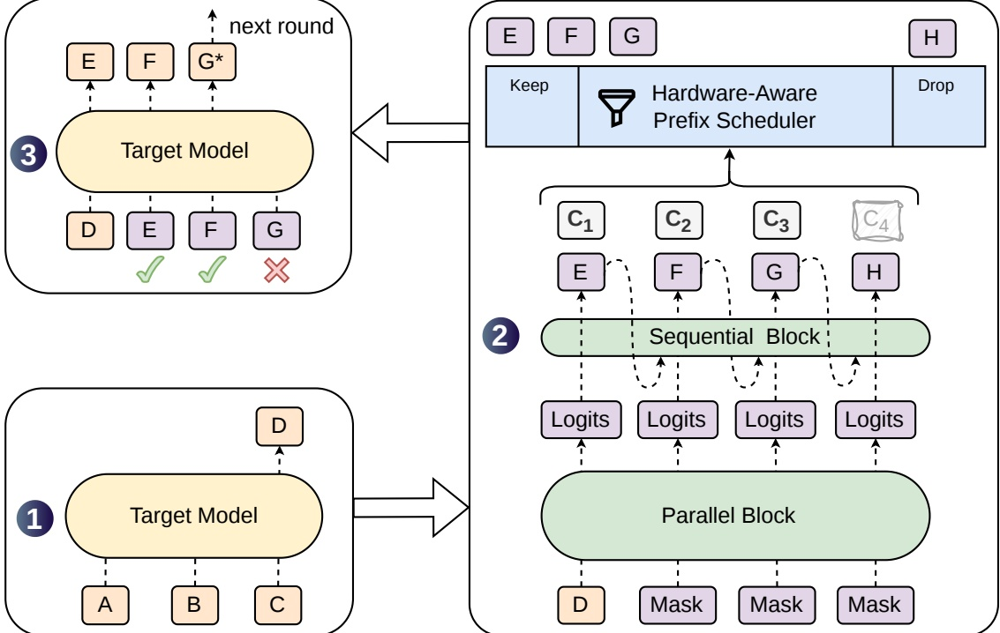
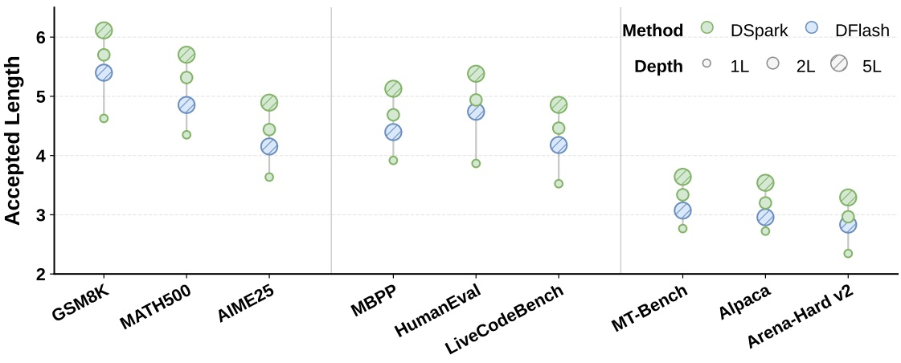

并行草稿能一次吐出很长的候选，但越靠后越没人接——DSpark 让它在高并发下真正提速
投机解码用「小模型起草、大模型并行验证」加速推理。并行草稿器一次前向就能提出很长的 block，却因为各位置相互独立而后缀迅速被拒；在高并发下无差别验证整个 block 又会挤占宝贵的 batch 容量。DSpark 用两件事解决：半自回归修复后缀衰减，置信度调度的硬件感知调度器按系统负载动态决定每个请求验证多长。
阅读原文 arXiv 摘要页 ↗TL;DR
- 问题：并行草稿器（如 DFlash）一次前向就能提出长 block，但各位置独立预测、缺少 block 内依赖，后缀接受率迅速衰减；同时在高并发下无差别验证长 block 会浪费 target 的 batch 容量。
- 方法一（质量）：半自回归——沉重的并行 backbone 保持一次前向，只加一个轻量串行 head（Markov 或 RNN）注入 block 内 token 间依赖，几乎不增加草稿延迟。
- 方法二（系统）：置信度调度验证——置信度 head 估计每个位置的「前缀存活概率」，经 STS 校准后，硬件感知调度器结合实时吞吐曲线，为每个请求动态决定验证长度。
- 离线结果：在 Qwen3-4B/8B/14B 上，宏平均接受长度比自回归 Eagle3 高 30.9% / 26.7% / 30.0%，比并行 DFlash 高 16.3% / 18.4% / 18.3%；在 Gemma4-12B 上同样领先。
- 线上结果：部署进 DeepSeek-V4 服务系统、跑真实流量，相对旧生产基线 MTP-1，在匹配吞吐下把单用户生成速度提升 60%–85%（V4-Flash）与 57%–78%（V4-Pro），并在严格交互 SLA 下守住了 MTP-1 撑不住的吞吐。
- 边界：调度器只省 target 端的验证浪费；草稿端生成初始 \(\gamma\)-token block 的固定开销仍在，对本身接受率很低的复杂 query，这部分前置算力不可回收。
01投机解码的账本，和两个卡住的地方
自回归 LLM 每生成一个 token 都要对全部前缀做一次完整前向，延迟正比于输出长度。投机解码（Chen et al., 2023；Leviathan et al., 2023）的思路是：让轻量草稿模型 \(M_d\) 一次提出 \(\gamma\) 个候选 token，再让大 target 模型 \(M_t\) 用一次前向并行验证——通过拒绝采样接受与 target 分布一致的最长前缀，并补一个 bonus token。因为验证是并行的、且接受规则精确保持 target 分布，投机解码不损失任何生成质量就能加速。
逐位置看：在草稿位置 \(k\)，target 算出自己的分布 \(p_k^t\)，与草稿分布 \(p_k^d\) 比较，token \(x_k\) 以概率 \(\min(1,\, p_k^t(x_k)/p_k^d(x_k))\) 被接受。验证严格从左到右：位置 \(k\) 第一次被拒，后面 \(x_{k+1},\dots,x_\gamma\) 无论多好都全部丢弃。这条「前缀存活」规则是后面所有设计的出发点。
设每轮接受 \(\tau\) 个 token，草稿与验证的墙钟时间分别为 \(T_{\mathrm{draft}}\)、\(T_{\mathrm{verify}}\)，则每 token 平均延迟：
于是加速只有三根杠杆：降低 \(T_{\mathrm{draft}}\)（草稿更快）、提高 \(\tau\)（草稿更准）、压低有效的 \(T_{\mathrm{verify}}\)（验证更聪明）。草稿架构决定了前两根杠杆怎么权衡。
准，但慢
每个位置都条件于前面已采样的 token，建模能力强、\(\tau\) 高；但草稿成本随 block 线性增长 \(T_{\mathrm{draft}}\propto\gamma\)，逼得它只能用小 \(\gamma\) 和浅网络。代表：Eagle3。
快，但后缀塌
一次前向产出全部 \(\gamma\) 个 token，\(T_{\mathrm{draft}}\) 几乎与 block 大小无关，可以负担更深的网络和更大的 block；代价是各位置独立预测，无法建模 token 间依赖。代表：DFlash。
要真正把「大并行 block」的潜力释放出来，会撞上两个互相独立的瓶颈——一个在生成质量，一个在系统效率：
并行草稿器各位置独立预测，无法建模 block 内依赖，会出现「多模态碰撞」：例如上下文既可能续「of course」也可能续「no problem」，独立预测就可能拼出「of problem」这种不一致组合。结果是后缀接受率沿 block 迅速衰减（Gu et al., 2018；Huang et al., 2022b）。
理想验证长度沿两个轴变化。数据侧：代码这类结构化请求天然比开放聊天有更高接受率。系统侧：轻载时多验几个 token 几乎免费；但重载时，验证一个高拒绝风险的 token 会占掉本可服务其他活跃请求的 batch 容量（Liu et al., 2024b；Wu et al., 2025）。所以无差别验证整个 block 会在高并发下严重拖低吞吐。
DSpark 就是冲着这两点设计的：半自回归解决瓶颈一，置信度调度验证解决瓶颈二。下面按「先看它长什么样 → 再看两个机制怎么运作 → 最后看证据」的顺序展开。
02整体架构：一轮解码里发生了什么
回到延迟公式 \(L=(T_{\mathrm{draft}}+T_{\mathrm{verify}})/\tau\)：自回归拿高 \(\tau\) 但付 \(T_{\mathrm{draft}}\propto\gamma\)；并行把 \(T_{\mathrm{draft}}\) 压成一次前向却牺牲 \(\tau\)；而定长验证又把 \(T_{\mathrm{verify}}\) 浪费在几乎注定被拒的低置信后缀上。DSpark 用两个互补组件同时收拾这三项。

并行 backbone + 轻量串行块
并行 backbone 承担绝大部分草稿计算，让 \(T_{\mathrm{draft}}\) 几乎与 \(\gamma\) 无关；一个轻量串行块随后注入 token 间依赖，以极小的额外延迟提升 \(\tau\)。
置信度 head + 硬件感知调度器
置信度 head 估计每位置的接受概率，硬件感知调度器据此裁掉低置信后缀，削减不必要的验证算力 \(T_{\mathrm{verify}}\)。
03半自回归：给并行草稿补上 block 内的一点依赖
并行草稿器一次前向产出全部 \(\gamma\) 个 logits，每个预测都无法条件于 block 内别处采样的 token。当上下文有多个合理续写（如「of course」和「no problem」），它可能拼出「of problem」这类不一致组合——因为每个位置是对所有可能前驱求边缘，而不是条件于实际采到的那个。接受率因此沿 block 迅速衰减。DSpark 把草稿生成拆成两阶段：
- 并行阶段。并行 backbone（这里用 DFlash）一次前向跑完整个 block，产出隐状态 \(h_1,\dots,h_\gamma\) 和基础 logits \(U_1,\dots,U_\gamma\)。相对原始 DFlash 只做一处小改：不再「anchor + \(\gamma\) 个 mask、只预测 mask 位」，而是把 anchor 本身当作第一个预测位，于是 \(\gamma\) 个输入 token（anchor + \(\gamma-1\) 个 mask）产出 \(\gamma\) 个草稿 logits，减少草稿计算又保持相近质量。
- 串行阶段。给基础 logits 补一个依赖前缀的转移偏置 \(B_k(x_0,x_{\lt k},x_k)\)，让每个草稿位置能条件于 block 内此前采样的 token。它不定义全局归一化的能量模型，而是通过自回归因子分解诱导出一个因果 block 分布：
\(x_0\) 是上一验证轮的 anchor，\(U_k\) 是并行 backbone 在位置 \(k\) 的基础 logits，\(\mathcal{V}\) 是词表。推理时串行块从左到右按 \(p_k(\cdot\mid x_0,x_{\lt k})\) 采样。因为这个过程本身是串行的，串行块必须极轻（\(T_{\mathrm{sequential}}\ll T_{\mathrm{parallel}}\)），才能让整体草稿延迟仍由并行阶段主导。论文给了两种实例：
只看前一个 token 的一阶转移
把 \(B_k\) 限制为只依赖紧邻的前一个 token，退化成一阶转移 \(B(x_{k-1},x_k)\)。原则上是个 \(V\times V\) 大矩阵，用低秩分解 \(B=W_1W_2\) 近似（默认 \(r=256\)）：
\(W_1\) 是嵌入查表、\(W_2\) 是 logit 投影。低秩让存储和每步计算都很小，大词表下串行循环仍高效。回到那个例子：位置 1 一旦采到「of」，Markov head 就在位置 2 抬高「course」、压低「problem」，化解跨模碰撞。
用循环状态累积整段前缀
Markov head 超过一步就失忆。RNN head 维护循环状态 \(s_k\) 累积 block 内完整前缀历史：每步把 \(s_{k-1}\)、上一 token 嵌入 \(W_1[x_{k-1}]\) 与 backbone 隐状态 \(h_k\) 拼成 \(z_k\)，再做一次门控更新：
偏置 \(B_k(x_{\lt k},\cdot)=W_2^{\top}\tanh(W_o z_k)\)；\(W_g,W_c,W_o\) 由单个线性投影拆成门/候选/输出三份，\(s_0\) 初始化为零。
§4.3.2 的实验显示：RNN head 相对 Markov head 只带来边际增益，且主要出现在更长的提案长度上。考虑到 RNN head 实现更复杂、部署性质更差，论文默认用 Markov head（除 §4.3.2 专门研究 RNN 变体外，正文的「DSpark」都指 Markov 变体）。这也是「a little autoregression goes a long way」这一节标题的意思——只补一点点自回归就够了。
04置信度调度验证：只把算力花在有正期望回报的 token 上
半自回归让 DSpark 能高效生成大 block，但产出更多草稿 token 不自动等于更高的端到端加速。原因还是那两个轴：数据侧不同领域接受率天然不同（代码高、开放聊天低）；系统侧多验一个 token 的真实成本严格取决于引擎负载——轻载几乎免费，重载则占掉本可服务他人的 batch 容量。DSpark 用两件套解决：一个置信度 head 预测前缀存活概率，一个硬件感知前缀调度器 按当前负载动态定验证长度。
§3.2.1 置信度 head：预测「前缀存活概率」
置信度 head 为每个草稿位置 \(k\) 输出一个标量 \(c_k\in(0,1)\)。关键在于它的语义：\(c_k\) 建模的是「在前面所有 token 都被接受的条件下，位置 \(k\) 的草稿 token 通过 target 验证」的条件概率。结构是一个轻量线性投影加 sigmoid：
其中 \(h_k\) 是 backbone 隐状态，\(W_1[x_{k-1}]\) 是上一草稿 token 的 Markov 嵌入。监督信号用解析的每步接受率 \(c_k^\ast\)，它由草稿分布与 target 分布之间的总变差距离决定：
和只需要「排序正确」的阈值式启发式不同，DSpark 的硬件感知调度需要累积接受概率的绝对量级来估算期望接受长度 \(\tau\)。而神经网络的置信度常常过度自信，直接用原始分数会扭曲吞吐估计、导致次优调度。于是引入 Sequential Temperature Scaling（STS）：因为每个 \(c_i\) 是条件概率，链式法则下前缀被接受的联合概率就是累乘 \(\prod_{i\le k}c_i\)。STS 在留出验证集上从左到右逐位置做一维网格搜索，找最优温度标量使累乘的期望校准误差 ECE 最小，同时固定住已校准的前面各位置。温度缩放是保序变换：它把预测概率对齐到经验接受率，却不打乱置信度 head 学到的相对排序。
§3.2.2 硬件感知前缀调度器：把验证长度当成全局吞吐最大化问题
过去的方法（Huang et al., 2024；Li et al., 2024b）通常对置信度分数套一个静态阈值来定验证长度。在单请求假设下有效，但在高并发生产系统里，验证一个 token 的价值高度依赖当前负载，静态阈值就次优了。DSpark 把它形式化成一个全局吞吐最大化问题。
设一批有 \(R\) 个活跃请求。请求 \(r\) 的逐位置置信度是 \(c_{r,1},\dots,c_{r,\gamma}\)，验证长度 \(\ell_r\in\{0,\dots,\gamma\}\)。因为接受是「连续前缀」的，位置 \(j\) 的 token 存活概率是累乘 \(a_{r,j}=\prod_{i\le j}c_{r,i}\)。一步验证送进 target 的总 batch（按 token 计）是 \(B=\sum_{r}(1+\ell_r)\)，期望接受 token 数是 \(\tau=\sum_{r}\big(1+\sum_{j=1}^{\ell_r}a_{r,j}\big)\)。用 \(\mathrm{SPS}(B)\) 表示 batch 为 \(B\) 时引擎的「每秒步数」吞吐曲线——这条容量曲线在引擎初始化时 profile 一次，存成轻量成本表。调度器要最大化系统级期望 token 吞吐：
看似组合搜索，但目标结构允许高效贪心解。由于 \(a_{r,j}\) 关于 \(j\) 单调不增（\(a_{r,j}\le a_{r,j-1}\)），把请求 \(r\) 的验证长度从 \(j-1\) 延到 \(j\) 带来的期望接受 token 边际增益恰好是 \(a_{r,j}\)。所以只要把所有候选按 \(a_{r,j}\) 全局降序排序、依次贪心接纳，就自然尊重了前缀依赖。
| 输入 | 活跃请求 \(r\in\{1,\dots,R\}\)；每请求置信度序列 \(c_{r,1},\dots,c_{r,\gamma}\)；profile 好的步曲线 \(\mathrm{SPS}(B)\) |
|---|---|
| 1–3 | 对每个 \(r\) 算前缀存活概率 \(a_{r,j}\leftarrow\prod_{i\le j}c_{r,i}\) |
| 4 | 构造候选集 \(E\leftarrow\{(r,j)\mid a_{r,j}>0\}\)，按 \(a_{r,j}\) 降序排序 |
| 5–6 | 初始化：所有 \(\ell_r\leftarrow0\)；\(B\leftarrow R\)；\(\tau^\ast\leftarrow R\)；\(\Theta_{\mathrm{best}}\leftarrow R\cdot\mathrm{SPS}(R)\) |
| 7–9 | 按序取每个 \((r,j)\)：\(\ell_r\leftarrow j\)；\(B\leftarrow B+1\)；\(\tau^\ast\leftarrow\tau^\ast+a_{r,j}\)；当前吞吐 \(\Theta\leftarrow\tau^\ast\cdot\mathrm{SPS}(B)\) |
| 10–14 | 若 \(\Theta>\Theta_{\mathrm{best}}\)：更新 \(\Theta_{\mathrm{best}}\) 与选定长度 \(\ell_r^\ast\)；否则 break（早停） |
| 16 | 返回达到 \(\Theta_{\mathrm{best}}\) 的 \((\ell_1^\ast,\dots,\ell_R^\ast)\) |
无损投机解码要求非预期性：位置 \(k\) 的接纳决定必须只依赖采样 \(x_{r,k}\) 之前可见的信息，不能依赖 \(x_{r,k}\) 的实现值。但 DSpark 的置信度 head 用了「上一 token」的 Markov 特征，算下一个存活概率 \(a_{r,k+1}\) 就需要已经实例化的候选 \(x_{r,k}\)。一个回溯式的全局搜索会把 \(x_{r,k}\) 泄漏进第 \(k\) 步的接纳决定，引入选择偏差。Algorithm 1 用早停解决：一旦吞吐不再上升（\(\Theta\le\Theta_{\mathrm{best}}\)）立即 break，截断决定只依赖到该步为止的前缀，从而把接纳事件与未来 token 隔离，精确恢复 target 分布。
展开 Appendix A 的反例— 一个具体数值，说明「不早停」为什么真的会破坏无损性
单请求 \(R=1\)、最大草稿长度 \(\gamma=2\)。第一个位置的 pre-token 置信 \(a_1=0.8\)，profile 的容量曲线 \(\mathrm{SPS}(1)=1.0,\ \mathrm{SPS}(2)=0.5,\ \mathrm{SPS}(3)=0.45\)。验证 0 个和 1 个草稿 token 的期望吞吐：\(\Theta_0=1\cdot\mathrm{SPS}(1)=1.0\)，\(\Theta_1=(1+0.8)\cdot\mathrm{SPS}(2)=0.9\)。
不早停的话，调度器会在做出任何接纳决定之前去评估 \(\Theta_2\)。但 \(c_2\) 依赖 \(x_1\) 的实现值，于是 \(a_2=a_1c_2\) 也依赖 \(x_1\)：
情形 1：\(x_1\) 给出高 \(c_2=0.9\)
\(a_2=0.8\times0.9=0.72\)，\(\Theta_2=(1+0.8+0.72)\times0.45=1.134\)。它是 {1.0, 0.9, 1.134} 里的全局最大，调度器返回 \(\ell=2\)，第一个 token 被接纳。
情形 2：\(x_1\) 给出低 \(c_2=0\)
\(a_2=0\)，\(\Theta_2=(1+0.8+0)\times0.45=0.81\)。全局最大回到 \(\Theta_0=1.0\)，调度器返回 \(\ell=0\)，第一个 token 不被接纳。
于是「第一个草稿 token 是否被接纳」竟然取决于它自己的取值。把词表设为 \(\{A,B\}\)，第一个位置 \(p_t(A)=0.7,\ p_t(B)=0.3\)、\(p_d(A)=p_d(B)=0.5\)，标准接受概率 \(\min(0.7,0.5)+\min(0.3,0.5)=0.8\)，正好对上 \(a_1=0.8\)。假设 \(x_1=A\) 触发高置信（\(\ell=2\)，且以 \(\min(1,0.7/0.5)=1\) 被接受，输出 A），\(x_1=B\) 触发低置信（\(\ell=0\)，target 从 \(p_t\) 重采）。那么 \(\Pr(Y=A)=0.5+0.5\times0.7=0.85\)，\(\Pr(Y=B)=0.15\)——这个 \((0.85,0.15)\) 明显偏离 target 的 \((0.7,0.3)\)，证明回溯式调度器不是无损的。而早停因 \(\Theta_1\lt\Theta_0\) 会在 \(\ell=0\) 立即停止，根本不去计算依赖 \(x_1\) 的 \(c_2\)，非预期性得以保持。
05训练：三个位置加权的损失项
训练时从每条 target 序列随机采多个 anchor 位置，组成 \(\gamma\)-token block 作为训练数据。target 模型全程冻结；草稿模型共享它的嵌入层和语言模型 head（也冻结），只更新 backbone 草稿器、串行块和置信度 head。目标由三项组成，且都按 \(w_k=\exp(-(k-1)/\gamma)\) 位置加权——强调对期望接受长度贡献更大的靠前位置：
交叉熵：预测对下一个 token
分布匹配：直接压接受率的代理
因为每步接受概率 \(=1-\tfrac12\lVert p^d-p^t\rVert_1\)，压 \(\mathcal{L}_{\mathrm{tv}}\) 就直接最大化期望接受率。
置信度损失：二元交叉熵，监督软接受标签 \(c_k^\ast\)
总目标是三者加权组合，默认权重 \(\alpha_{\mathrm{ce}}=0.1,\ \alpha_{\mathrm{tv}}=0.9,\ \alpha_{\mathrm{conf}}=1.0\)：\(\ \mathcal{L}=\alpha_{\mathrm{ce}}\mathcal{L}_{\mathrm{ce}}+\alpha_{\mathrm{tv}}\mathcal{L}_{\mathrm{tv}}+\alpha_{\mathrm{conf}}\mathcal{L}_{\mathrm{conf}}\)。注意 \(\alpha_{\mathrm{tv}}\) 权重最高，说明「分布匹配 = 提接受率」是主要驱动力。
06离线证据：接受长度全面领先，且能拆出「为什么」
离线评测关掉置信度调度器，强制所有草稿器提固定长度的 block，以隔离出「原始草稿质量」。目标模型覆盖 Qwen3-4B/8B/14B 与 Gemma4-12B；对比 DFlash（并行 SOTA）和 Eagle3（基于 TTT 的自回归）。所有草稿器在同一训练框架、同一数据上重训，Eagle3 的 TTT horizon（7）与 DFlash/DSpark 的 block 大小（7）对齐，草稿层数 Eagle3=1、DSpark/DFlash=5。训练数据是 Open-PerfectBlend（130 万样本：数学 39.4%、代码 38.9%、聊天 17.6%、指令 4.1%），只用 prompt、response 由各 target 重新生成，训 10 epoch。采样温度 1.0，链式草稿，指标是每轮接受长度 \(\tau\)（越高越好）。
| Target | Drafter | GSM8K | MATH | AIME25 | MBPP | HumanEval | LCB | MT-Bench | Alpaca | Arena-Hard |
|---|---|---|---|---|---|---|---|---|---|---|
| Qwen3-4B | Eagle3 | 5.14 | 4.62 | 3.92 | 3.69 | 4.16 | 3.77 | 2.39 | 2.26 | 2.55 |
| DFlash | 5.40 | 4.85 | 4.15 | 4.40 | 4.74 | 4.18 | 3.07 | 2.96 | 2.83 | |
| DSpark | 6.11 | 5.70 | 4.89 | 5.13 | 5.38 | 4.86 | 3.64 | 3.54 | 3.29 | |
| Qwen3-8B | Eagle3 | 5.30 | 4.77 | 3.91 | 3.96 | 4.33 | 4.17 | 2.66 | 2.54 | 2.54 |
| DFlash | 5.33 | 4.91 | 4.07 | 4.36 | 4.64 | 4.39 | 3.11 | 2.98 | 2.81 | |
| DSpark | 6.17 | 5.78 | 5.01 | 5.16 | 5.52 | 5.17 | 3.72 | 3.58 | 3.21 | |
| Qwen3-14B | Eagle3 | 5.24 | 4.60 | 3.71 | 3.81 | 4.14 | 4.01 | 2.62 | 2.47 | 2.48 |
| DFlash | 5.41 | 4.84 | 3.98 | 4.44 | 4.59 | 4.33 | 3.10 | 2.94 | 2.72 | |
| DSpark | 6.21 | 5.74 | 4.94 | 5.26 | 5.43 | 5.02 | 3.70 | 3.58 | 3.13 | |
| Gemma4-12B | Eagle3 | 5.87 | 5.46 | 4.83 | 4.72 | 5.37 | 4.16 | 3.19 | 3.06 | 2.72 |
| DFlash | 5.45 | 5.04 | 4.22 | 4.39 | 4.95 | 3.70 | 2.98 | 2.84 | 2.59 | |
| DSpark | 6.05 | 5.78 | 5.12 | 5.11 | 5.64 | 4.51 | 3.49 | 3.35 | 2.92 |
DSpark 在全部 target 与全部领域上都超过 Eagle3 和 DFlash。宏平均接受长度：相对 Eagle3，Qwen3-4B/8B/14B 分别 +30.9% / +26.7% / +30.0%；相对 DFlash 分别 +16.3% / +18.4% / +18.3%；这个优势还跨模型族泛化（Gemma4-12B 同样领先）。表 1 也暴露出强烈的领域效应：结构化任务接受长度天然更高（Qwen3-4B 上数学约 5.57、代码约 5.12），开放聊天低得多（约 3.49）。这种「数据可预测性」的差异，正是定长验证会在尾部 token 上浪费算力的根源，也直接引出了置信度调度。
§4.3.1 为什么并行反而能赢过自回归？
一个反直觉的观察：并行的 DFlash 和半自回归的 DSpark 往往比完全自回归的 Eagle3 接受长度更长。为看清原因，论文引入逐位置条件接受率：对位置 \(k\)，只统计「前面 1 到 \(k-1\) 全部被接受」的样本，再算其中位置 \(k\) 也被接受的比例——从而剥离前缀错误的连带惩罚，露出每一步的底层预测质量。

§4.3.2 一点点自回归，走得很远


§4.3.3 验证得更聪明，而不是更长：置信度 head 的作用
即便 DSpark 在长 block 上仍保持高接受率，验证整个 block 依然低效——开放聊天的尾部 token 拒绝风险仍高，盲验就是浪费。这里先单独验证估计器本身（硬件感知调度器留到 §7 的线上评测），做一个离线阈值扫描（Qwen3-4B）。


静态阈值在动态服务里次优，因为它忽略系统负载：轻并发下验低置信 token 几乎没有机会成本，高并发下却挤占关键 batch 容量。这个「负载依赖」正是硬件感知调度器存在的理由——而调度器要工作，就要求置信度模型既有强判别力、又精确校准，才能准确估算累积存活概率。
07落地 DeepSeek-V4：把理论调度器塞进真实基础设施
DSpark 草稿模型与 DeepSeek-V4-Flash / V4-Pro（preview）共部署。并行 backbone 由三层 MoE（含 mHC）加 128 的滑动窗口注意力构成，最大 block \(\gamma=5\)，用 Markov head 做串行建模；置信度 head 端到端一起训、再用 STS 校准。落地要跨训练与推理两侧解决工程冲突。
§5.1 可扩展、灵活的训练
训练草稿模型需要 target 的输出分布做监督，但在完整文档上下文上同时跑两个模型内存和通信开销都很大。内部框架（HAI-LLM）里做了两个优化：
只传 LM head 前的隐状态
跨 worker 传 target 的全词表 logits（\(V\approx10^5\)）是带宽瓶颈。改为缓存 target 前向激活、只传 LM head 之前的隐状态，LM head 投影在草稿 worker 上只对被采样的 target 位置本地执行，把每 token 通信复杂度降到 \(O(d)\)。
让草稿成本与上下文长度解耦
从训练序列采固定数量的草稿 anchor，把这些孤立的预测 block 打包成稠密训练 batch，用token 级注意力索引而非 2D mask 管理，在多条独立序列/anchor 间保持精确因果掩码，免去 padding 的算力和显存开销。
§5.2 让调度器在真实硬件上跑起来
Algorithm 1 理论上无损，但直接上生产会撞两个冲突：① 它假设 SPS 曲线平滑单峰，真实硬件容量却是离散、锯齿状阶梯下降的（Yan et al., 2020）；② 它要求每步动态调度草稿 token 数，与连续 CUDA graph replay、Zero-Overhead Scheduling（ZOS）冲突。
因为 ZOS 要求下一步 batch 在当前步结束前就已知，同步调度会拖住 GPU 流水。DSpark 改成异步：用两步之前的置信度输出来近似即将到来的验证容量。当前步候选 token 仍严格按最新的累积置信度排序,历史预测只用来定动态截断长度（即 batch 上限 \(K\)）——本质是动态 top-K 选择，选择机制保序、总是优先验证最有把握的 token，同时把调度延迟完全隐藏。
更妙的是：为了不被锯齿 SPS 的悬崖困在局部最优，DSpark 去掉了早停 break、改回无约束全局搜索。前面证明过无约束回溯搜索会泄漏未来 token、破坏无损性——但异步设计恰好化解了：无约束搜索只评估两步之前的历史预测，截断长度天然只依赖两步前的信息，与当前 token \(x_{r,k}\) 的实现值隔离。于是异步本身构成了一道因果屏障，既能跨硬件悬崖榨取物理吞吐，又精确保持 target 分布。
§5.3 高吞吐低延迟推理
生产服务要同时优化单请求延迟与聚合吞吐。DSpark 的部署有个特点：受 KV-cache 容量、可用流量（如 RL 长尾负载）限制，有效 batch 长期低于 GPU 的算力饱和阈值。在这个区间里传统权衡被简化——固定并发上限下，最大化每 GPU 总吞吐与最大化单用户速度（tok/s/user）高度相关，而非彼此竞争。异步调度器把空闲算力导向最有把握的草稿 token。物理执行层的挑战是要支持一个 batch 内变长 query：标准 decode kernel 针对定长优化，朴素处理变长会因 padding 和负载不均严重欠用 GPU。DSpark 的解法是把物理执行与逻辑序列追踪解耦——所有 token 跨请求展平、当作独立元素同等处理，复杂的序列内依赖由 sparse attention 里的 marker 张量传达。在 V4 架构上只需改 index-attention 和 compress 两个 kernel 就能支持这种变长路由。
§5.4 真实流量下的表现
在 DeepSeek-V4-Flash / V4-Pro（preview）的生产引擎里，把 DSpark-5（最大草稿长度 \(\gamma=5\)）对比旧生产基线 MTP-1。MTP-1 是此前的生产配置，在 V4-preview 发布两周后被 DSpark 取代。它长期维持单 token，是因为静态多 token 草稿器（如 MTP-3/5）在高并发下会因过量验证开销严格拖低聚合吞吐——所以拿 DSpark 对比它，正好证明「安全地释放大 block 潜力」这件事。图中散点是真实流量采样，实线是拟合的性能前沿。

V4-Flash：在中等的 80 tok/s/user SLA 下，DSpark 把聚合吞吐提升 51%。更严格的 120 tok/s/user 是另一种性质的区间：此时单 token 的 MTP-1 逼近工作边界、只能撑很小的并发 batch，因此比值被数值放大到「名义上高 661%」——论文明确说这主要是「DSpark 把可行交互前沿往外推」的证据，而非对一个良好利用基线的可代表倍数。在更稳的匹配吞吐点上，DSpark 把单用户速度提升 60%–85%。V4-Pro：同样模式——35 tok/s/user SLA 下吞吐 +52%；50 tok/s/user 下 MTP-1 进入低并发区、名义比值 406%；匹配容量下 DSpark 单用户速度快 57%–78%。

前缀调度器只最小化 target 端的验证浪费；DSpark 仍要付草稿端用并行 backbone 生成初始 \(\gamma\)-token block 的固定开销。对本身接受率很低的复杂 query，这部分前置算力不可回收。未来可在草稿模型内引入「难度感知的提前退出」，让这类请求跳过整块生成。
08三句话记住 DSpark
并行起点 + 一点自回归
重型并行 backbone 拿下第一个 token 的高杠杆，轻量串行 head 压住后缀衰减——2 层就超过 5 层纯并行，延迟只加 0.2%–1.3%。
验证长度 = 全局吞吐问题
校准过的存活概率 + profile 好的硬件容量曲线，贪心 + 早停按负载动态定每请求验证长度；早停同时是无损性的因果屏障。
合起来，DSpark 在离线全面超过 Eagle3 与 DFlash，在 DeepSeek-V4 线上相对 MTP-1 把单用户速度提升 60%–85%，并在严格交互 SLA 下守住了旧基线撑不住的吞吐——把 LLM serving 的 Pareto 前沿往外推了一截。作者开源了 DSpark checkpoint 与 DeepSpec 训练库（含 Eagle3、DFlash、DSpark）。